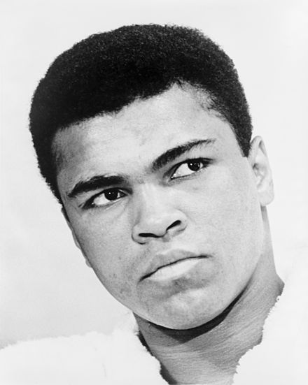

Cassius Marcellus Clay Jr.
"I am the greatest, I said that even before I knew I was."
- Muhammad Ali
Here's a time-line of Muhammad Ali's life:
- 1942 - Born in Louisville, Kentucky
- 1960 - Clay made his professional debut on October 29, 1960, winning a six-round decision over Tunney Hunsaker.
- 1964 - At age 22, Ali won the world heavyweight championship from Sonny Liston in a major upset on February 25.
- 1966 - Ali refused to be drafted into the military due to his religious beliefs and ethical opposition to the Vietnam War, and was found guilty of draft evasion and stripped of his boxing titles.
- 1971 - Ali and Frazier's first fight, held at the Garden on March 8, 1971, was nicknamed the "Fight of the Century", due to the tremendous excitement surrounding a bout between two undefeated fighters, each with a legitimate claim to be heavyweight champion.
- 1972 - After the loss to Frazier, Ali fought Jerry Quarry, had a second bout with Floyd Patterson and faced Bob Foster in 1972, winning a total of six fights that year.
- 1974 - The defeat of Frazier set the stage for a title fight against heavyweight champion George Foreman in Kinshasa, Zaire, on October 30, 1974—a bout nicknamed The Rumble in the Jungle.
- 1976 - Ali fought Ken Norton for the third time in September 1976. The bout, which was held at Yankee Stadium, resulted in Ali winning a heavily contested decision that was loudly booed by the audience. Afterwards, he announced he was retiring from boxing to practice his faith, having converted to Sunni Islam after falling out with the Nation of Islam the previous year.
- 1979 - Following this win, on July 27, 1979, Ali announced his retirement from boxing. His retirement was short-lived, however; Ali announced his comeback to face Larry Holmes for the WBC belt in an attempt to win the heavyweight championship an unprecedented fourth time.
- 1984 - In 1984, Ali was diagnosed with Parkinson's Syndrome, which sometimes results from head trauma from violent physical activities such as boxing.[22][241][242] Ali still remained active during this time, later participating as a guest referee at WrestleMania I.
- 1987 - Around 1987, the California Bicentennial Foundation for the U.S. Constitution selected Ali to personify the vitality of the U.S. Constitution and Bill of Rights. Ali rode on a float at the following year's Tournament of Roses Parade, launching the U.S. Constitution's 200th birthday commemoration.
- 1990 - In 1990, Ali traveled to Iraq prior to the Gulf War, and met with Saddam Hussein in an attempt to negotiate the release of American hostages. Ali secured the release of the hostages, in exchange for promising Hussein that he would bring America "an honest account" of Iraq. Despite arranging the hostages release, he received criticism from President George H. W. Bush, and Joseph C. Wilson, the highest-ranking American diplomat in Baghdad.
- 1994 - In 1994, Ali campaigned to the United States government to come to the aid of refugees afflicted by the Rwandan genocide, and to donate to organizations helping Rwandan refugees.
- 1996 - In 1996, he lit the flame at the 1996 Summer Olympics in Atlanta, Georgia. It was watched by an estimated 3.5 billion viewers worldwide.
- 2012 - On July 27, 2012, Ali was a titular bearer of the Olympic flag during the opening ceremonies of the 2012 Summer Olympics in London. He was helped to his feet by his wife Lonnie to stand before the flag due to his Parkinson's Syndrome rendering him unable to carry it into the stadium.[269] The same year, he was awarded the Philadelphia Liberty Medal in recognition of his lifelong efforts in activism, philanthropy and humanitarianism.
- 2016 - Ali was hospitalized in Scottsdale, Arizona, on June 2, 2016, with a respiratory illness. Though his condition was initially described as fair, it worsened, and he died the following day at the age of 74 from septic shock.
"Muhammad Ali was one of the greatest boxers in history, the first fighter to win the world heavyweight championship on three separate occasions. In addition, he was known for his social message of black pride and black resistance to white domination and for refusing induction into the U.S. Army during the Vietnam War."